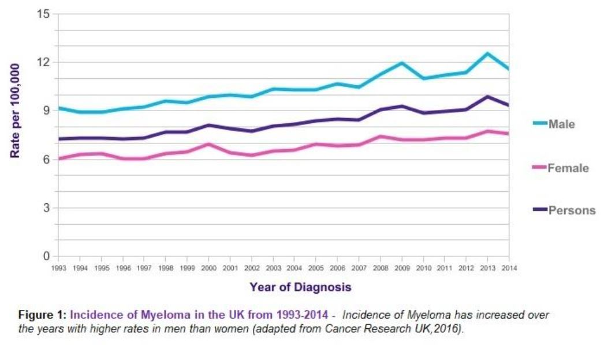
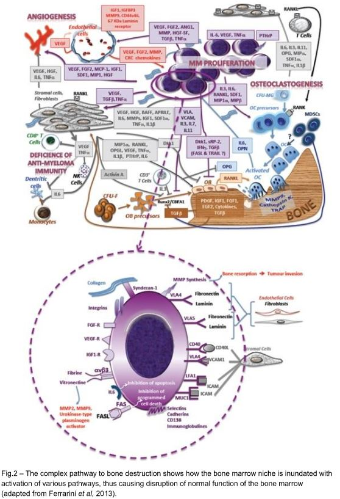
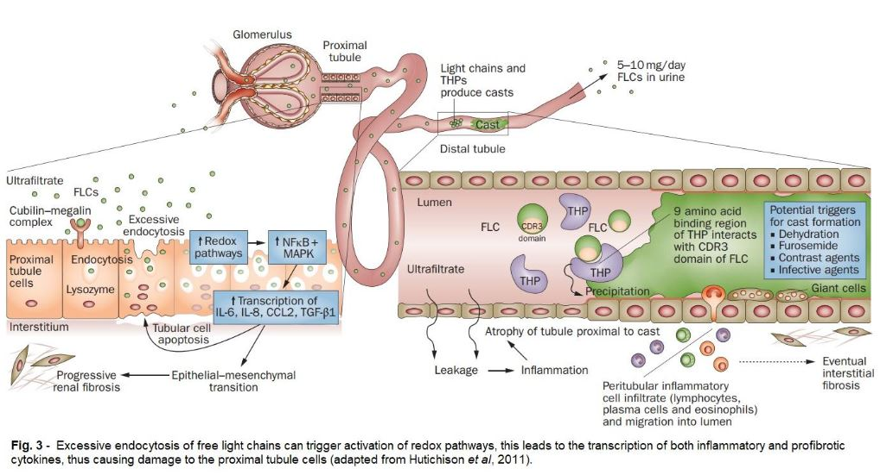
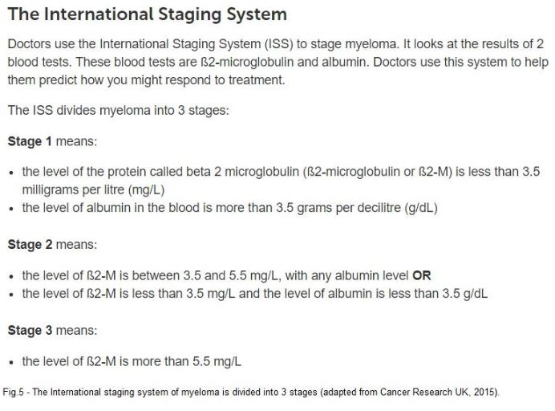
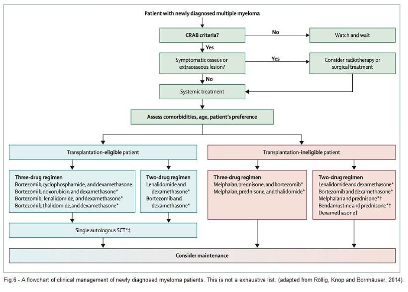
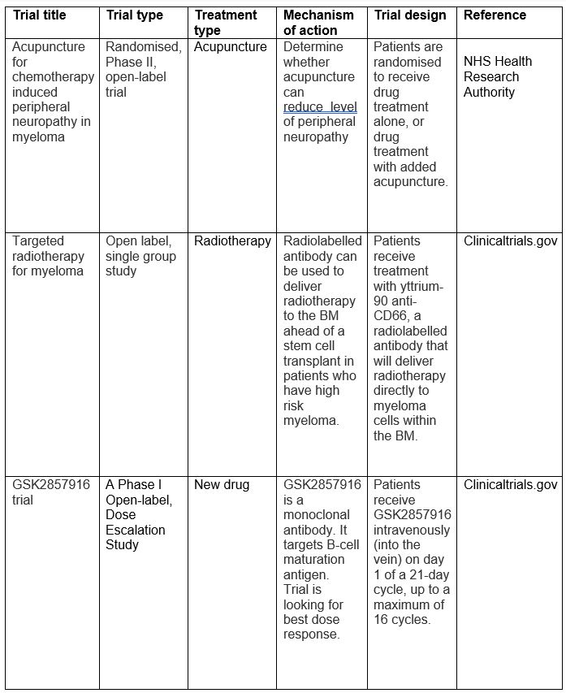

Cytogenetic changes in plasma cells lead to the abnormal production of plasma cells. Due to low proliferation over a period of time, these only counts for 30-50% of cases detected to have this abnormal karyotype. The normal function of plasma cells is to produce antibodies against foreign microorganisms. In MM, immature B cells encounter foreign substance which damaging the structure of the DNA in some form (Kuehl & Bergsagel, 2012). This damage can be in the form of a deletion, addition, or translocation of a chromosome as well as hyperdipoloidy. In other instances point mutations can occur whereby the DNA structure is changed.
MM cells proliferate in the bone marrow niche and stimulation via cytokines, adhesion molecules and angiogenesis.
Diagnosis of MM involves a range of tests. The International Myeloma Working Group updated the criteria for diagnosing MM in 2014, to look for seven factors as opposed to the four that made up the acronym C.R.A.B; simply put this was raised calcium, renal problems, anaemia, and bone problems. Now it includes C.R.A.B as well as spotting biomarkers of malignancy.
Routine blood tests are usually the first step in diagnosis. A full blood count, morphology screen, chemistry profile including serum creatinine, uric acid, LDH, urinalysis and liver function tests are amongst the initial tests performed. While these tests are not specific in establishing the diagnosis of MM, they are useful when putting together with symptoms in aiding a clinical interpretation and thus forming the basis for a prognosis.


As plasma cells turn malignant, this causes an overproduction of paraproteins by the malignant plasma cells. These paraproteins are detectable in serum and urine. These are also known as Bence Jones proteins. These proteins are either kappa or Lambda type. It is only IgG which is overproduced in MM. They are found in the urine and serum due to decreased kidney filtration renal failure as discussed previously. They are detected by electrophoresis or serum free light chain assays (Cancer Research UK, 2015; Luckerath et al.,2013).
Bone marrow aspirate, biopsies and plasma cell morphology are crucial for the diagnosis of multiple myeloma. Biopsies allow sampling of several different depths of bone marrow enhancing the prognosis of MM. A peripheral blood film can you show over 10% abnormal plasma cells which are indicative of MM. Auer rods, round inclusions such as a Russell bodies can also occur (Ribourtout and Zandecki, 2015.)
BCSH has published guidelines for diagnosing MM taken from health experts data from around the world.
The major guideline for diagnosis and management of MM, were published in 2006, but were recently revised in 2014 with the GRADE system (see Fig.4).
Clinicians use diagnostic testing to determine the stage of MM. With the outcome of the disease survival rates and determine the prognosis. There are two staging systems. The Durie-Salmon staging system is the older, outdated system but is still sometimes used. It has three stages, low cell mass (stage I), neither stage I or III (stage II), and high cell mass (stage III) (All about Blood, 2015).
International staging system (ISS) is the preferred new style of staging. It is based on the assessment of best results of beta 2 microglobulin and albumin. It has three stages (see Fig.5) (Cancer Research UK, 2015).

Myeloma can also occur without symptoms which is known as smouldering or asymptomatic myeloma. Patients with smouldering myeloma present with a level paraprotein of more than 30g/L, 10% to 60% abnormal plasma cells in the bone marrow, and no related organ or tissue damage. As these patients do not clinically have malignant myeloma they are monitored every 3 months for any symptoms and worsening of the condition (Cancer Research UK, 2015).
Until cure becomes possible there are two aims that are taken into account when deciding treatment regimen for patients with multiple myeloma. These include bringing the myeloma under control and preventing aggressive relapse, and treating secondary symptoms such as bone pain, anaemia and infections (NHS, 2018). During the mid-1900s, treatment for multiple myeloma relied on patients getting ill first, as the clinician had very little treatment options available. Treatment consisted of chemotherapy and steroids. As research continued and more drugs were invented this not only expanded treatment options but improved life expectancy for patients as well (Vargesson, 2015).
Today the decision for treatment regimens for multiple myeloma can be grouped into non-intensive and intensive treatment. Non-intensive treatment is aimed at older, less fit patients which are more common as it is found in older people. Intensive treatments are usually aimed at younger, fitter patients as it is more toxic (NHS, 2018).
Treatment options range from chemotherapy, steroids, stem cell transplant and drugs such as Thalidomide and Bortezomide (see fig.6). Thalidomide is an immunomodulatory drug which was first marketed in 1950s for sickness in pregnant women. Unfortunately this had negative consequences as it causes birth defects. The mechanism of action of thalidomide has only recently become in the last 5 years. A study carried out by Zhu et al in 2011 found that thalidomide's primary targets is cereblon (CRBN). Cereblon is a protein encoded by the CRBN gene. It is found on human chromosome 3. Thalidomide inhibits Tumour Necrosis Factor-α (TNF-α), suppresses angiogenesis, increases cell mediated cytotoxic effects and modulates adhesion molecule expression. TNF-α is inhibited degradation of TNF-α mRNA increasing the activity of alpha 1 acid glycoprotein. Apoptosis is triggered activation of caspase-8 pathway to release apoptotic proteins (Latif et al, 2012).

Bortezomib is a proteasome inhibitor, the main mechanism of action is to induce apoptosis by inhibiting the NF-kB pathway. In multiple myeloma the NF-kB pathway is out of sync. It keeps the expression of genes permanently 'on', which allows the continual proliferation of the cancer cells, and provides cell protection from apoptosis. Hideshima et al showed Bortezomib increased expression of phosphorylation of IkBα and down regulated IkBα. They also suggested Bortezomib blocking non-canonical NF-kB pathway by inhibiting proteasome dependent conversion of p100 to p53.
Other mechanisms of Bortezomib include the accumulation proteins, which cause stress in the endoplasmic reticulum and lead to the inhibition of angiogenesis, down regulation of growth factor receptors, and adhesion molecule expression suppression. However Bortezomib can lead to resistance due to inhibition of cellular responses mediating these downstream effects (Gandolfi et al, 2017).
Researchers continue to look for novel treatment in different combinations, whether its old drugs mixed with different therapies such as radiotherapy or chemotherapy; or transplants used in conjunction with biological therapies. The NHS in conjunction with MHRA and other research authorities offer patients to join clinical trials for new treatments which may then come into practice. Monoclonal antibodies which target CD38, is a new therapeutic agent for MM. CD38 is a multifunctional glycoprotein which is expressed on the tumour cells. The main function of CD38 on tumour cells is to protect them from natural killer cytotoxicity. However various studies have targeted this glycoprotein, and have noted positive effects in disrupting this mechanism therefore rendering cell lysis of tumour cell (Van de Donk et al., 2016). Daratumumab a monoclonal antibody is the first drug of its kind, which has recently been approved for use in the NHS (Myeloma UK, 2017). It is indicated for the treatment of patients with multiple myeloma who have received at least three prior types of treatment. Daratumumab works by attaching to the CD38 protein on the tumor cell and initiates immune-mediated responses, direct action on the tumor cell and immunoregulatory actions to initiate cell death. Immune mediated responses include complement dependent cytotoxicity which lyses myeloma cells; antibody-dependent cell-mediated cytotoxicity which activates natural killer cells, t cells, neutrophils and macrophages. Macrophages are induced which initiate phagocytosis (Darzalex HCP, 2017). Direct action of Daratumumab induces programmed cell death of tumor cell lines when cross-linked with FC receptors, which are present on the surface of the tumour cell (Overdijk et al., 2016). However Daratumumab interferes with serological testing as it binds to CD38 on red blood cells. This causes positive results in Indirect Antiglobulin test (IAT), therefore masking detection of antibodies to antigens in the patient serum. Standard blood bank techniques show pan-reactivity in antibody identification panels, and red blood cell cross matches, therefore all requests for blood products are sent to NHS reference laboratories for extensive testing. All patients taking Daratumumab must be monitored carefully and blood products must be ordered in advance in case of emergencies (Chari et al., 2015; Chapuy et al., 2015).
There are various clinical trials on-going which look at different stages of myeloma. These include relapsed, refractory, high risk myeloma and newly diagnosed. This trial looks to alleviate secondary symptoms caused by MM or looking at various therapies for treatment.
Currently there is a single arm, open label, multicentre phase I/II trial looking at CAR T cell therapy. It is investigating whether AUTO2, a type of treatment known as chimeric antigen receptor T cell therapy is effective in myeloma patients. This is a new type of immunotherapy in which patients T cells are harvested and genetically modified in the laboratory (Ali et al., 2015; Kochenderfer and Rosenberg, 2013). Phase one of the trial is looking at the safety and dose-response of AUTO2. Patients undergo T cell harvest a minimum of 35 days before treatment. During this time they are given immunosuppressive drugs called Fludarabine and Cyclophosphamide, which dampen immune system and almost strip it bare. This is a particularly sensitive time for the patient because they are more prone to infections, which could be lethal due to effectively very few or no white cells in the body. Patient T cells that were harvested, are modified to recognise two molecules, BCMA and TACI, which are present on the surface of myeloma cells. These are then transfused back into the patient, where they home to the bone marrow niche. Phase 2 of the trial is going to evaluate the activity of AUTO2 (Cancer Research UK, 2017).
There are many other trials some of which include but not limited to:

To conclude, multiple myeloma is a disease that manifests in plasma cells, which is incurable. It accounts for 2% of all cancer cases in the UK. Multiple myeloma is more common in Afro-Caribbean population than any other ethnicity.
The DNA of plasma cells causes the cells to turn into tumour cells. T cells have a slow turnover and very generic symptoms which makes diagnosis more difficult. Peak age for diagnosis is usually around 85 to 87 years old. Diagnosis of MM relies on BCSH guidelines which state seven key factors for diagnosing MM, including C.R.A.B and biomarkers.
At present NHS hospitals treat patients with a combination of treatments including drugs such as immunomodulatory drugs, steroids, chemotherapy, radiation and stem cell transplants. There is on-going research into new treatment regimens which target different areas of the tumour cells. One such drug is Daratumumab, which is the CD38 monoclonal antibody. It targets the antigens on the surface of the tumour cells, thus initiating the immunological pathways to kill the tumour cells. During trials this has proven successful thus becoming licensed for use in England and Wales.
There are lots of other trails which focus on treating the symptoms of MM as well as targeting the myeloma cells. Therefore researchers must be careful when tagging these cells, as to not switch off any other pathways in the body. While the search continues to find a suitable cocktail of therapies, it seems in an ageing population this may be difficult as the body can only tolerate so much.
Ali, S., Shi, V., Wang, M., Stroncek, D., Maric, I., Brudno, J., Stetler-Stevenson, M., Rose, J., Feldman, S., Hansen, B., Hakim, F. and Gress, R. (2015). Remissions of Multiple Myeloma during a First-in-Humans Clinical Trial of T Cells Expressing an Anti-B-Cell Maturation Antigen Chimeric Antigen Receptor. [online] Blood Journal. Available at: http://www.bloodjournal.org/content/126/23/lba-1?sso-checked=true [Accessed 20 Jan. 2018]. All about Blood. (2015). Durie-Salmon Staging System | All About Blood. [online] Available at: https://allaboutblood.com/tag/durie-salmon-staging-system/ [Accessed 19 Jan. 2018]. Atanackovic, D., Steinbach, M., Radhakrishnan, S. and Luetkens, T. (2016). Immunotherapies targeting CD38 in Multiple Myeloma. OncoImmunology, 5(11), p.e1217374. BCSH. (2018). Guidelines | British Society for Haematology. [online] Available at: http://www.b-s-h.org.uk/guidelines/?category=Haemato-oncology&p=1&search=#guideline-filters__select__status [Accessed 9 Jan. 2018]. Bianchi, G. and Munshi, N. (2015). Pathogenesis beyond the cancer clone(s) in multiple myeloma. Blood, 125(20), pp.3049-3058. Blimark, C., Holmberg, E., Mellqvist, U., Landgren, O., Bjorkholm, M., Hultcrantz, M., Kjellander, C., Turesson, I. and Kristinsson, S. (2014). Multiple myeloma and infections: a population-based study on 9253 multiple myeloma patients. Haematologica, 100(1), pp.107-113. Cancer Research UK. (2015). Stages | Myeloma | Cancer Research UK. [online] Available at: http://www.cancerresearchuk.org/about-cancer/myeloma/stages [Accessed 15 Jan. 2018]. Cancer Research UK. (2015). Types of myeloma | Myeloma | Cancer Research UK. [online] Available at: http://www.cancerresearchuk.org/about-cancer/myeloma/types [Accessed 19 Jan. 2018]. Cancer Research UK. (2016). Myeloma incidence statistics. [online] Available at: http://www.cancerresearchuk.org/health-professional/cancer-statistics/statistics-by-cancer-type/myeloma/incidence [Accessed 10 Jan. 2018]. Cancer Research UK. (2017). A study of AUTO2 for myeloma. [online] Available at: http://www.cancerresearchuk.org/about-cancer/find-a-clinical-trial/a-study-of-auto2-for-myeloma#undefined [Accessed 20 Jan. 2018]. Chantry, A., Kazmi, M., Barrington, S., Goh, V., Mulholland, N., Streetly, M., Lai, M. and Pratt, G. (2017). Guidelines for the use of imaging in the management of patients with myeloma. British Journal of Haematology, 178(3), pp.380-393. Chapuy, C., Nicholson, R., Aguad, M., Chapuy, B., Laubach, J., Richardson, P., Doshi, P. and Kaufman, R. (2015). Resolving the daratumumab interference with blood compatibility testing. Transfusion, 55(6pt2), pp.1545-1554. Chari, A., Arinsburg, S., Jagannath, S., Satta, T., Treadwell, I., Catamero, D., Morgan, G., Feng, H., Uhlar, C., Khan, I., Doshi, P. and Usmani, S. (2015). Blood Transfusion Management and Transfusion-Related Outcomes in Daratumumab-Treated Patients With Relapsed or Refractory Multiple Myeloma. Clinical Lymphoma Myeloma and Leukemia, 18(1), pp.44-51. Chemical Pathology User Guide. (2018). 4th ed. [ebook] Central Manchester Foundation Trust. Available at: http://www.cmft.nhs.uk/media/1441497/pathology%20user%20guide.pdf [Accessed 15 Jan. 2018]. ClinicalTrials.gov [Internet]. Bethesda (MD): National Library of Medicine (US). Identifier NCT02064387, A Phase I Open-label, Dose Escalation Study to Investigate the Safety, Pharmacokinetics, Pharmacodynamics, Immunogenicity and Clinical Activity of the Antibody Drug Conjugate GSK2857916 in Subjects With Relapsed/Refractory Multiple Myeloma and Other Advanced Hematologic Malignancies Expressing BCMA; 29 July 2014. [accessed 20/01/18]. Available from: https://clinicaltrials.gov/ct2/show/NCT02064387#armgroup ClinicalTrials.gov [Internet]. Bethesda (MD): National Library of Medicine (US). Identifier NCT01521611, Radiolabelled Anti-CD66 Monoclonal Antibody in the Conditioning Regimen Prior to Haematopoietic Stem Cell Transplantation: Phase I Study in Patients With Poor-risk Disease; March 2002. [accessed 20/01/18]. Available from: https://clinicaltrials.gov/ct2/show/NCT01521611?recrs=a&cond=Myeloma&cntry1https://clinicaltrials.gov/ct2/show/NCT01521611?recrs=a&cond=Myeloma&cntry1=EU%3AGB&draw=2&rank=18=EU%3AGB&draw=2&rank=18#studydesc Dai, H., Wang, Y., Lu, X. and Han, W. (2016). Chimeric Antigen Receptors Modified T-Cells for Cancer Therapy. JNCI: Journal of the National Cancer Institute, 108(7). Darzalex HCP. (2017). DARZALEX® (daratumumab) Mechanisms of Action | HCP. [online] Available at: https://www.darzalexhcp.com/mechanisms-of-action [Accessed 19 Jan. 2018]. Darzalex package insert. Horsham, PA: Janssen Biotech, 2015. [Available at: http://www.darzalex.com/shared/product/darzalex/darzalex-prescribing-information.pdf (accessed January 17, 2018).] Ferrarini, M., Mazzoleni, G., Steimberg, N., Belloni, D. and Ferrero, E. (2013). Innovative Models to Assess Multiple Myeloma Biology and the Impact of Drugs. Multiple Myeloma - A Quick Reflection on the Fast Progress. Gambella, M., Rocci, A., Passera, R., Gay, F., Omede, P., Crippa, C., Corradini, P., Romano, A., Rossi, D., Ladetto, M., Boccadoro, M. and Palumbo, A. (2014). High XBP1 expression is a marker of better outcome in multiple myeloma patients treated with bortezomib. Haematologica, 99(2), pp.e14-e16. Gandolfi, S., Laubach, J., Hideshima, T., Chauhan, D., Anderson, K. and Richardson, P. (2017). The proteasome and proteasome inhibitors in multiple myeloma. Cancer and Metastasis Reviews, 36(4), pp.561-584. Greenberg, A., Rajkumar, S. and Vachon, C. (2012). Familial monoclonal gammopathy of undetermined significance and multiple myeloma: epidemiology, risk factors, and biological characteristics. Blood, 119(23), pp.5359-5366. Hideshima, T., Chauhan, D., Hayashi, T., Akiyama, M., Mitsiades, N., Mitsiades, C., Podar, K., Munshi, N., Richardson, P. and Anderson, K. (2003). Proteasome inhibitor PS-341 abrogates IL-6 triggered signaling cascades via caspase-dependent downregulation of gp130 in multiple myeloma. Oncogene, 22(52), pp.8386-8393. Hutchison, C., Batuman, V., Behrens, J., Bridoux, F., Sirac, C., Dispenzieri, A., Herrera, G., Lachmann, H. and Sanders, P. (2012). The pathogenesis and diagnosis of acute kidney injury in multiple myeloma. Nature Reviews Nephrology, 8(1), pp.43-51. Kochenderfer, J. and Rosenberg, S. (2013). Treating B-cell cancer with T cells expressing anti-CD19 chimeric antigen receptors. Nature Reviews Clinical Oncology, 10(5), pp.267-276. Kuehl, W. and Bergsagel, P. (2012). Molecular pathogenesis of multiple myeloma and its premalignant precursor. Journal of Clinical Investigation, 122(10), pp.3456-3463. Landgren, O. and Rajkumar, S. (2016). New Developments in Diagnosis, Prognosis, and Assessment of Response in Multiple Myeloma. Clinical Cancer Research, 22(22), pp.5428-5433. Latif, T., Chauhan, N., Khan, R., Moran, A. and Usmani, S. (2012). Thalidomide and its analogues in the treatment of Multiple Myeloma. Experimental Hematology & Oncology, 1(1), p.27. Loehrer, P. (2006). International Staging System for Multiple Myeloma. Yearbook of Oncology, 2006, pp.177-178. Lückerath, K., Lapa, C., Spahmann, A., Jörg, G., Samnick, S., Rosenwald, A., Einsele, H., Knop, S. and Buck, A. (2013). Targeting Paraprotein Biosynthesis for Non-Invasive Characterization of Myeloma Biology. PLoS ONE, 8(12), p.e84840. Maes, K., Nemeth, E., Roodman, G., Huston, A., Esteve, F., Freytes, C., Callander, N., Katodritou, E., Tussing-Humphreys, L., Rivera, S., Vanderkerken, K., Lichtenstein, A. and Ganz, T. (2010). In anemia of multiple myeloma, hepcidin is induced by increased bone morphogenetic protein 2. Blood, 116(18), pp.3635-3644. Mikkilineni, L. and Kochenderfer, J. (2017). Chimeric antigen receptor T-cell therapies for multiple myeloma. Blood, 130(24), pp.2594-2602. Multiple Myeloma Research Foundation. (2018). Anemia - Multiple Myeloma Anemia - Anemia Multiple Myeloma. [online] Available at: https://www.themmrf.org/multiple-myeloma/multiple-myeloma-complications/anemia/ [Accessed 20 Jan. 2018]. Multiple Myeloma Research Foundation. (2018). Impaired Immune System Myeloma - Multiple Myeloma Infection. [online] Available at: https://www.themmrf.org/multiple-myeloma/multiple-myeloma-complications/impaired-immune-system/ [Accessed 16 Jan. 2018]. Multiple Myeloma Research Foundation. (2018). Myeloma Bone Lesions - Lytic Bone Lesions - Bone Lesion Myeloma. [online] Available at: https://www.themmrf.org/multiple-myeloma/symptoms/bone-lesions/?gclid=CjwKEAjwmf6-BRDi9fSN7Ijt1wUSJAASawcjJ8BlrOs0b2F4NRA6tjR4rAHfVdiGVVHflgcWm-sQ2xoCmDDw_wcB. [Accessed 11 Jan. 2018]. Myeloma UK. (2017). Daratumumab approved for use across Europe in new combinations. [online] Available at: https://www.myeloma.org.uk/news/daratumumab-approved-for-use-across-europe-in-new-combinations/ [Accessed 18 Jan. 2018]. NHS. (2018). Multiple Myeloma Treatment. [online] Available at: https://www.nhs.uk/conditions/multiple-myeloma/treatment/ [Accessed 15 Jan. 2018]. NHS Health Research Authority [Internet]. Identifier NCT02275403, Randomised clinical trial of acupuncture plus standard care versus standard care for chemotherapy induced peripheral neuropathy (CIPN); [accessed 20/01/18]. Available from: https://www.hra.nhs.uk/planning-and-improving-research/application-summaries/research-summaries/acufocin-standard-care-alone-or-with-acupuncture-for-cipn/ ONS. (2017). Cancer Registration Statistics, England - Office for National Statistics. [online] Available at: https://www.ons.gov.uk/peoplepopulationandcommunity/healthandsocialcare/conditionsanddiseases/bulletins/cancerregistrationstatisticsengland/2015 [Accessed 10 Jan. 2018]. Overdijk, M., Jansen, J., Nederend, M., Lammerts van Bueren, J., Groen, R., Parren, P., Leusen, J. and Boross, P. (2016). The Therapeutic CD38 Monoclonal Antibody Daratumumab Induces Programmed Cell Death via Fcγ Receptor–Mediated Cross-Linking. The Journal of Immunology, 197(3), pp.807-813. Rajkumar, S. and Kumar, S. (2016). Multiple Myeloma: Diagnosis and Treatment. Mayo Clinic Proceedings, 91(1), pp.101-119. Ribourtout, B. and Zandecki, M. (2015). Plasma cell morphology in multiple myeloma and related disorders. Morphologie, 99(325), pp.38-62. Röllig, C., Knop, S. and Bornhäuser, M. (2014). Multiple myeloma. The Lancet. The Myeloma Beacon. (2013). Risk Of Infection Among Multiple Myeloma Patients Is High And Rising (ASH 2012). [online] Available at: http://www.myelomabeacon.com/news/2013/01/11/infection-risk-multiple-myeloma-high-and-rising-ash-2012/ [Accessed 16 Jan. 2018]. Sanchez, L., Wang, Y., Siegel, D. and Wang, M. (2016). Daratumumab: a first-in-class CD38 monoclonal antibody for the treatment of multiple myeloma. Journal of Hematology & Oncology, 9(1). Snowden, J., Greenfield, D., Bird, J., Boland, E., Bowcock, S., Fisher, A., Low, E., Morris, M., Yong, K. and Pratt, G. (2017). Guidelines for screening and management of late and long-term consequences of myeloma and its treatment. British Journal of Haematology, 176(6), pp.888-907. Van de Donk, N., Janmaat, M., Mutis, T., Lammerts van Bueren, J., Ahmadi, T., Sasser, A., Lokhorst, H. and Parren, P. (2016). Monoclonal antibodies targeting CD38 in hematological malignancies and beyond. Immunological Reviews, 270(1), pp.95-112. Vargesson, N. (2015). Thalidomide-induced teratogenesis: History and mechanisms. Birth Defects Research Part C: Embryo Today: Reviews, 105(2), pp.140-156.